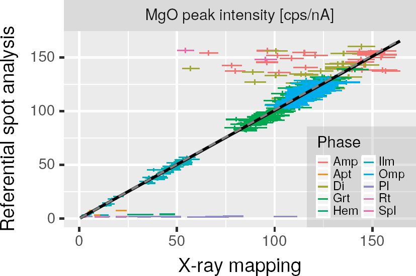

Initial centroids are guessed by comaring data from
spot analysis and x-ray mapping.
First, phase identification is done on some pixels in X-ray maps which
is quantified by spot analysis.
Second, for each phase, median values of X-ray maps are utilized as
initial centroids.
Note that X-ray mapping inevitably involves multi-phase pixels, and
such pixels can be a member of training data set for initial centroids.
See "Multi-phase pixels" section for
automatic and manual special cares on such pixels.
find_centers(xmap, qnt, fine_phase = NULL, saveas = "centers0.csv")
| xmap | an |
|---|---|
| qnt | an |
| fine_phase | A character vector to specify fine grained phases which tend to comprise multi-phase pixels. See "Multi-phase pixels" section for details. |
| saveas | File name to save result. |
X-ray mapping inevitably involves multi-phase pixels,
especially for fine-grained phases.
When the multi-phase pixels are member of training data set,
guessing initial centroids can be biased.
This is why guessing centroids is based on median instead of mean.
However, if pixels to guess centroids for cetrtain phase are
comprising a large number of or even a full of multi-phase pixels,
median is still vulnerable.
For example, refer to a reprinted figure 5 from
Yasumoto et al. (2018), and
captions in original article.
Phases such as Amp, Di, and Pl are outlying the regression curves due to
multi-phase pixels.
For these phases, median values of peak X-ray intensities from
X-ray mapping are unreliable values for initial centroids.
Thus, training data set should exclude data points from multi-phase pixels.

Multi-phase pixels are automatically excluded by defining them as data points outlying 99% predictive intervals in a following model: $$I_{i, \mathrm{map}} \sim Poisson(\beta_i I_{i, \mathrm{qnt}}),$$ where \(I_{i, \mathrm{map}}\) and \(I_{i, \mathrm{qnt}}\) are peak X-ray intensities of an element, \(i\), from X-ray mapping and quantitative spot analysis, respectively. \(\beta_i\) is a regression coefficient for an element, \(i\).
In case all data points for certain phase are regarded as multi-phase pixels
automatically by the above model or manually by the fine_phase paramter,
initial centroids are set to medians of predictions by the above model.
Yasumoto, A., Yoshida, K., Kuwatani, T., Nakamura, D., Svojtka, M., & Hirajima, T. (2018). A rapid and precise quantitative electron probe chemical mapping technique and its application to an ultrahigh-pressure eclogite from the Moldanubian Zone of the Bohemian Massif (Nové Dvory, Czech Republic). American Mineralogist, 103(10), 1690-1698, https://doi.org/10.2138/am-2018-6323CCBY.